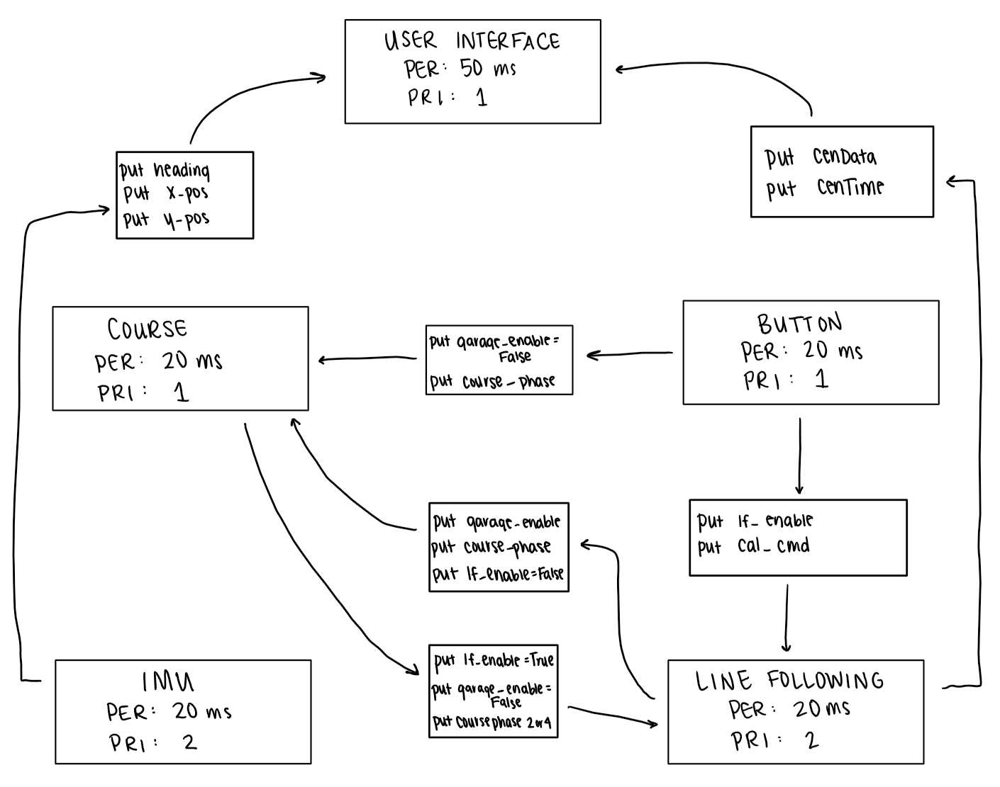
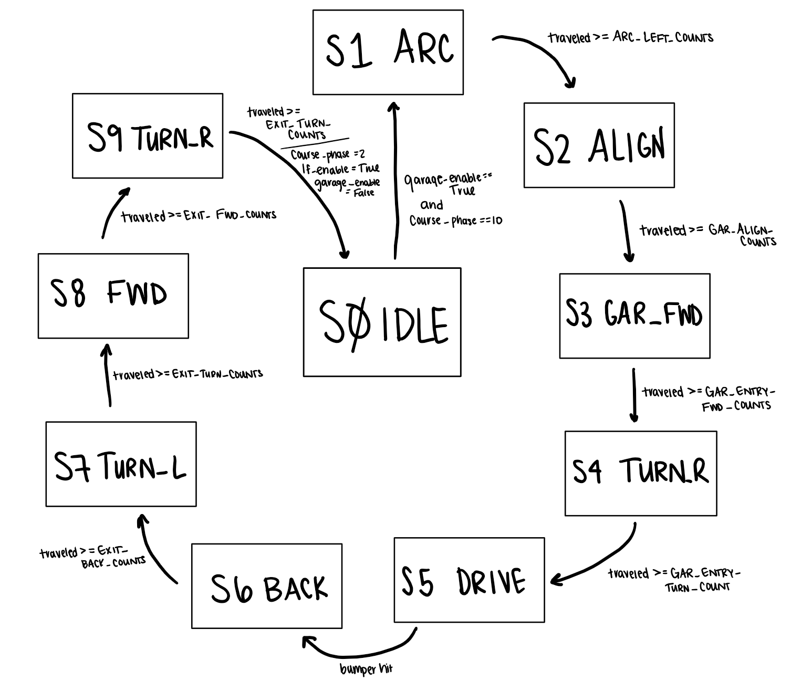
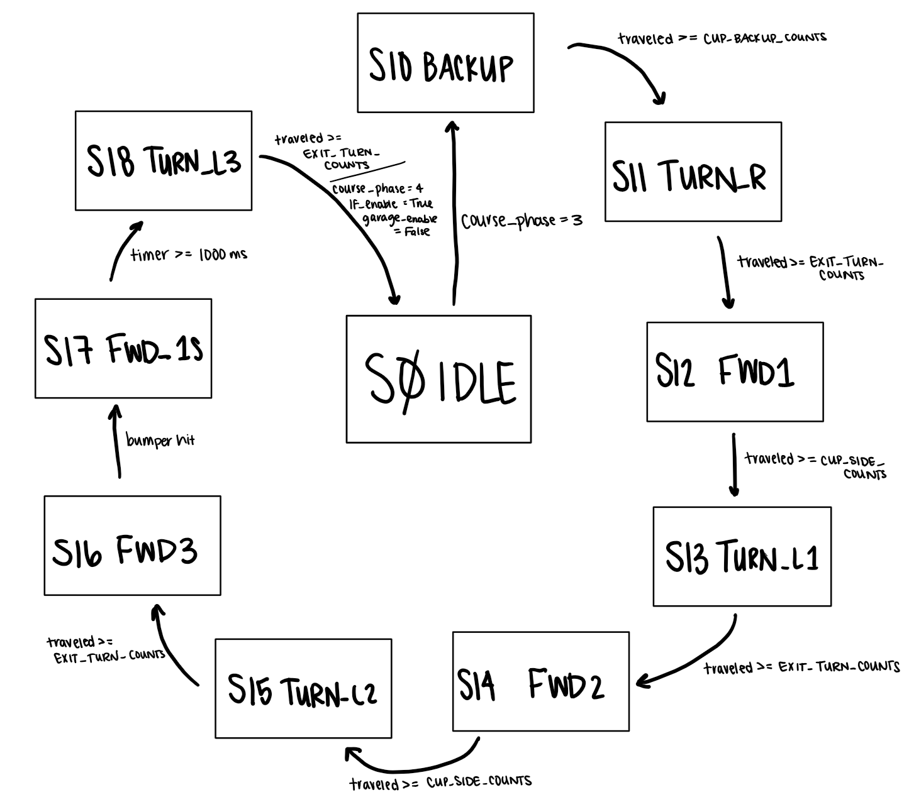
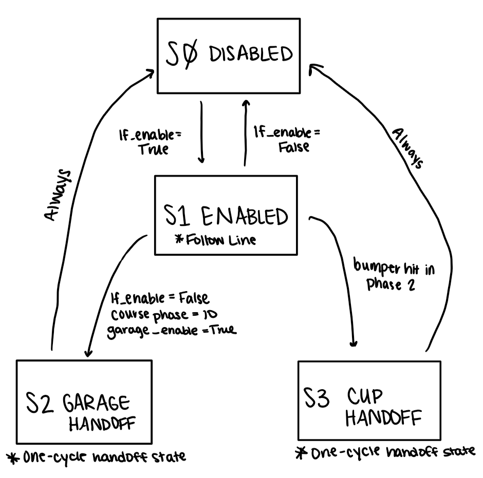
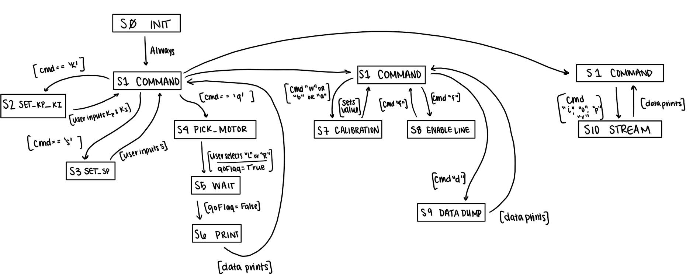
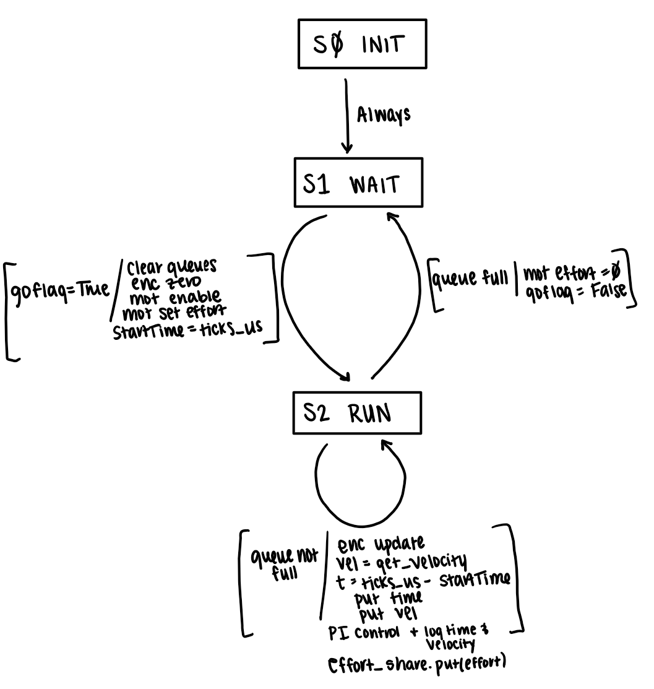

Software Design¶
The software of Robert is organized using cooperative multitasking implemented with a priority-based scheduler. Each major subsystem is divided into individual tasks, including line following, course execution, button input handling, and a user interface for debugging and testing. These tasks each run at different periods and priorities and communicate through shared variables. Control flags within the code allow the system to transition between continuous line-following behavior and hard-coded driving sequences.
In our code, we use the shared flag course_phase to coordinate behavior between the line-following and course tasks. While the course task has its own finite state machine (FSM) for hard-coded driving sequences such as the garage and cup tasks, course_phase indicates which section of the course is currently active.
The phases are defined as follows:
Phase 0 – Initial line following between checkpoint 0 and checkpoint 1
Phase 1 / 10 – Garage sequence (hard-coded FSM)
Phase 2 – Curvy track line-following with modified control
Phase 3 – Cup interaction sequence
Phase 4 – Final line-following to the end of the course
When the second button press starts the run, course_phase is set to 0 and line-following begins. When the encoder count reaches the predefined value for checkpoint 1, the line-following task stops the motors, disables itself, and updates course_phase to the garage sequence. At this point, the course task exits its idle state and begins executing its FSM.
After completing the garage sequence, the system transitions to Phase 2, where line-following is re-enabled. In this section, the robot operates on a curvier track, so a slower velocity and reduced proportional gain (Kp) are used. Additionally, if the line is lost, the robot steers toward the last known line direction rather than behaving as it did on the initial straight section.
Phase 3 is triggered during line-following when the bumper sensor is activated. At this point, the line-following task disables itself and hands control to the course task, which executes the cup FSM. After the cup sequence is completed, the system transitions to Phase 4, where line-following is re-enabled and the robot finishes the course.
As described above, tasks communicate through shared variables and controlled handoffs between line-following and course tasks. The IMU is initialized and available in the system but is only used for position and heading data during debugging and testing through the user interface. It does not directly affect control during autonomous operation.
High-Level Task Diagram¶
{kind=link}

The button task operates as a finite state machine with an idle state and three states corresponding to button presses. The behavior is as follows:
First press → initiates sensor calibration
Second press → enables motors and begins autonomous operation
Third press → stops the robot and resets all system flags
{kind=link}
Garage FSM¶
{kind=link}

The cup sequence FSM handles the interaction with the cup after a bumper trigger during line-following. This sequence uses timed and distance-based movements to navigate around and push the cup out of the designated area.
Cup FSM¶
{kind=link}

The line-following behavior is not implemented as a strict FSM, but it can be modeled similarly.
Line Following Logic¶
{kind=link}

The user task FSM is used for debugging, calibration, testing, and parameter tuning.
User Task FSM¶
{kind=link}

Finally, the motor task controls both motors using closed-loop velocity control with encoder feedback and PI control.
Motor Task FSM¶
{kind=link}

Overall, the software architecture combines cooperative multitasking, shared-variable communication, and FSM-based control to enable reliable and repeatable robot behavior.